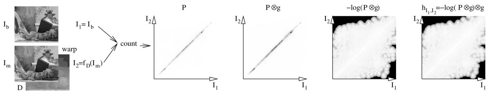

同时，当时排第一梯队的方法（Graph Cuts / Belief Propagation / 分层法）虽然准，但「runtimes of more than 20 sec to more than a minute」——二十多秒到一分钟以上，而且复杂度随场景大小变。于是 SGM 的野心很明确：
① 抗辐射变化
不受曝光/光照差异影响，灰度差法失效它也不慌。
② 近全局精度
精度接近那些全局最优方法，但不必真做全局搜索。
③ 线性复杂度
复杂度 $O(WHD)$（宽×高×最大视差），可预测、可扩展。
④ 快
目标运行在 1–2 秒级，而不是一分钟。
3. ★ 为什么要互信息（MI）
原文把匹配代价分成两类：BT（采样不敏感的绝对差，Birchfield-Tomasi）这一类，以及 MI（互信息，Mutual Information）这一类。传统 AD/SD/BT 的问题原文明说：它们「are sensitive to radiometric differences」（对辐射/光照差异敏感）。而 MI「is insensitive to recording and illumination changes」——因为它由两个图的熵与联合熵构成，只关心「灰度值的统计分布关系」，不关心具体灰度值是多少。
生活类比：熵与互信息
熵是「一件事有多不确定 / 多乱」：抛硬币结果很随机，熵高；太阳每天东升，熵低。互信息衡量「知道左图某处，能消除多少右图对应处的不确定性」。两张图配准得好，左右对应像素的灰度分布高度相关、联合熵低、互信息高；配准得差，两边像两团独立噪声，互信息低。所以 MI 把「找对应」变成「找让互信息最大的视差」。
原文的实验原话必须引（这是 MI 优于 BT 的硬证据）：在全局线性 / 非线性缩放时，「BT breaks down very quickly, while the performance of MI and HMI is almost constant」；在不同曝光下，「BT fails completely, whereas HMI is nearly unaffected」。结论很干脆：「using BT is only advisable on images that are carefully taken under exactly the same conditions」——BT 只在「同条件精心拍摄」时才建议用。

原图注（Fig. 1）：Calculation of the MI-based matching cost as a preprocessing step. For each pixel of $I_b$ (base image), a cost volume is computed from $I_m$ (match image) for all disparities. The joint probability $P$ is estimated with Parzen windows for a current disparity image and then convolved with a Gaussian $g$. A response image $h_{I_1,I_2}$ (right) shows an example for a pixel position of $I_b$ (left), where the true correspondence in $I_m$ is marked by a black dot.（基于 MI 的匹配代价计算过程。）
原文还指出一个关键事实：「almost all of the currently top-ranked algorithms optimize a global energy function」——当时几乎所有顶尖方法，本质都是在最小化一个全局能量函数。SGM 也是，只是它用「半全局」的招数把全局最小化变得便宜。
5. ★ 关键公式串讲
这一节最硬核的五条公式，逐条过。
5.1 互信息的定义
$$MI_{I_1,I_2}=H_{I_1}+H_{I_2}-H_{I_1,I_2}$$
配准好时，左右图对应区域统计上强相关，联合熵 $H_{I_1,I_2}$ 低，于是 MI 高。所以「找对应」=「找让 $MI$ 最大的视差」。
这条式子的麻烦在于：MI 作代价，需要先有一个视差图 $D$ 去把右图 warp（变形对齐）到左图，才能统计联合分布。可我们正要算的恰恰就是这个视差图——没有视差就没法算 MI 代价，没有 MI 代价又算不出视差。这就是本节最值得讲的逻辑难点：一个「鸡生蛋、蛋生鸡」的循环。原文的破法是层次化、迭代求解——从粗分辨率随便给个视差图起步，一层层往上 refine。
原图注（Fig. 2）：Aggregation of costs in disparity space. Left: Minimum cost path $L_r(p,d)$ in the $(x,y,d)$ coordinate system for one path direction $r$. Right: 16 path directions starting from pixel $p$.（视差空间中的代价聚合。）
为解决 5.2 的鸡生蛋，HMI 从 1/16 分辨率、随机视差图起步，递归向上采样。关键规则：低分辨率层的视差图「is used only for estimating the probability distribution P」——只用来估概率分布 $P$，其余全部重算，以免误差跨层传播。理论耗时只比 BT 慢约 14%：